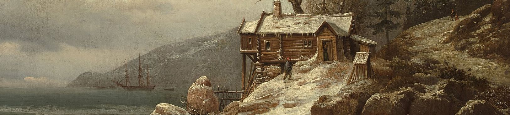

Visit a Fjord
A guide for the free weekend, Fri, Jan 15 to Sun, Jan 17. The Nærøyfjord, a branch of the Sognefjord near the village of Flåm, is on the UNESCO World Heritage list, and the train ride there is one of the most scenic in Norway.
The route
- OsloBergen Line train, about 4.5 to 5 hours
- MyrdalFlåm Railway, about 1 hour
- FlåmOptional boat through the Nærøyfjord, about 2 hours
- GudvangenBus to Voss, then train back to Oslo
The simplest plan: leave Oslo early Friday morning, arrive in Flåm in the afternoon, spend Saturday there, and return Sunday. Either retrace the route by train, or take the boat to Gudvangen and return through Voss. Times change by season, so check every connection on Vy and the Flåm Railway site when you book.
Booking
- Trains. Book the Bergen Line on Vy. Look for "Minipris" fares, which are cheapest when booked early. The Flåm Railway is booked separately on its own site.
- Packages. Norway in a Nutshell sells the whole loop, trains, boat, and bus, as one ticket. It costs more but saves planning.
- Student discounts. Carry your student ID. Some fares and attractions offer reductions.
- Leave a margin. Winter storms sometimes delay or close the Bergen Line. Don't plan your return on the last train of Sunday. You must be back for class Monday morning at the Bishop's Office.
Where to stay
- In Flåm. Options include the historic Fretheim Hotel near the station, Flåmsbrygga Hotel by the harbor, Flåm Marina apartments with kitchens, and Heimly Pensjonat, a smaller budget option. Flåm is small and some places close or reduce service in winter, so book early.
- Nearby. If Flåm is full, look in Aurland, about 10 minutes away by road.
- Searching. Use Visit Flåm or a booking site. Share a room or apartment with classmates to cut costs.
Things to do in Flåm in winter
- The Flåm Railway. The ride itself is a highlight: a steep descent through tunnels and past frozen waterfalls.
- Fjord cruise. Boats through the Nærøyfjord run year-round, with fewer departures in winter. In long cold spells the inner fjord can freeze. The boat then follows an "ice route" on the Aurlandsfjord with a detour into the Nærøyfjord, and a bus connects Undredal and Gudvangen. Check the timetable before you plan your day around it.
- Snowshoeing. Guided tours go up to the Stegastein viewpoint above the Aurlandsfjord. Snowshoe tour or FjordSafari winter activities.
- Ægir BrewPub. A brewpub in a Viking-style hall, with food as well as beer.
Before you go
- Email Hans your plans by Wed, Jan 13: who you're with, where you're going, when you leave and return, and how to reach you. hsgustafson@stthomas.edu
- Travel with others. Don't make this trip alone.
- Check the weather on Yr, the Norwegian weather service. The mountains along the route are much colder than Oslo.
- Budget. Trains, lodging, and meals add up quickly. Price everything before you commit.
A fjord closer to home
Oslo sits at the head of the Oslofjord. Its landscape is gentler than western Norway's, but the island ferries from Aker Brygge make an easy afternoon on the water, and they belong to Oslo's public transit system. Check whether your 30-day transit pass covers them when you receive it on Jan 11.
More information
- Visit Flåm: activities, dining, and lodging
- Visiting Flåm in winter
- Nor-Way Bus Express: long-distance buses
- Visit Norway: the national tourist board